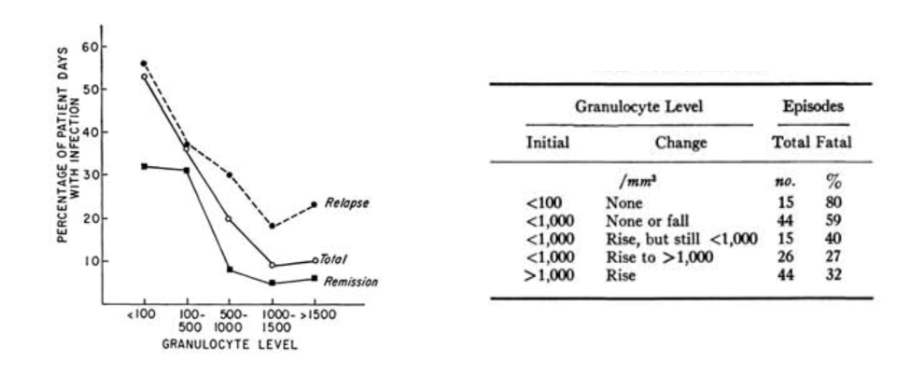
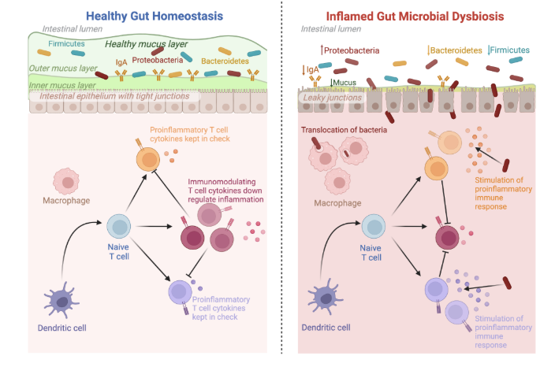
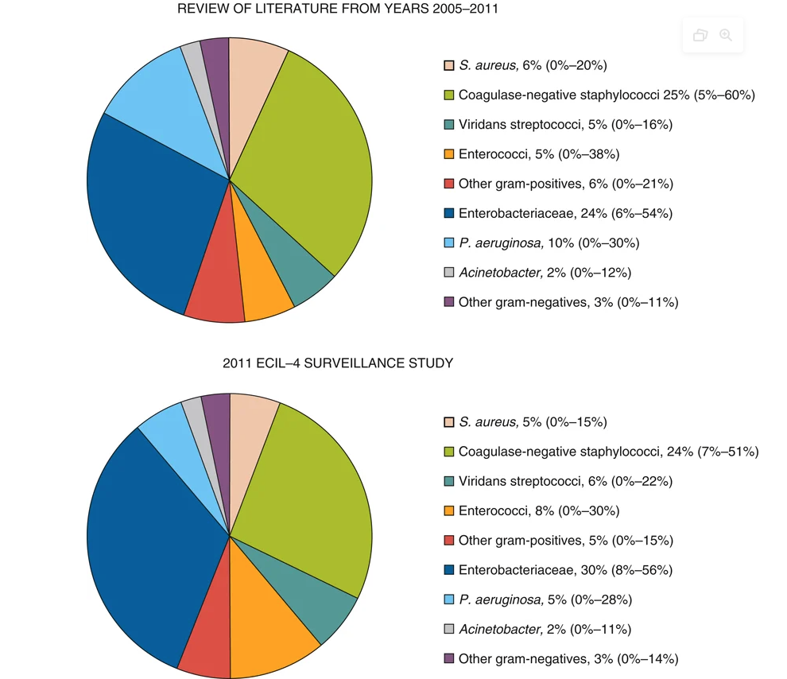
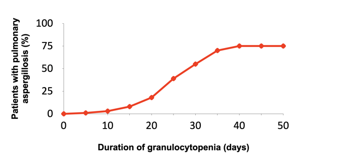
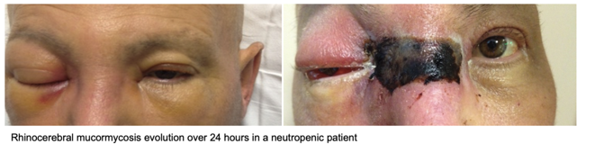
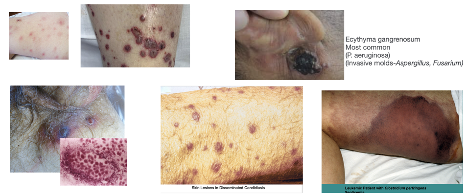
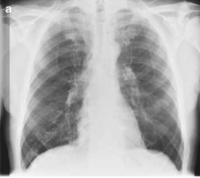
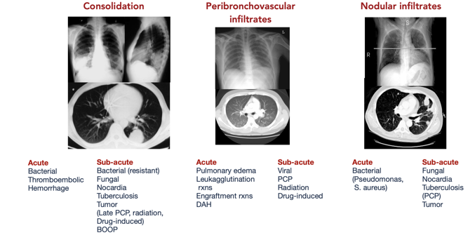
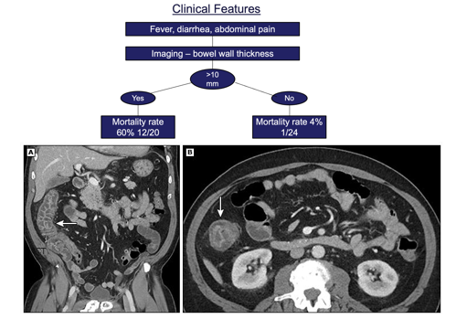

Prophylaxis and Empirical Therapy of Infection in Cancer Patients
Febrile Neutropenia — From Risk Factors to Management
Learning Objectives
After completing this chapter, you should be able to:
- Identify the most common infections associated with short versus prolonged neutropenia
- Explain how skin, mucocutaneous lesions, abdominal pain, or pneumonia alter the infection differential diagnosis in neutropenic patients
- Describe common empiric antimicrobial regimens used in febrile neutropenia while awaiting diagnostic results
- Outline prophylaxis strategies tailored to patient risk and local epidemiology
- Differentiate between escalation and de-escalation empiric therapy strategies
Introduction
Cancer patients represent one of the best examples of how both a disease and its treatment can impair the complex immunologic network aimed at maintaining the integrity of the body and defending it against infections from both the external and internal environment. For decades it has been known that a granulocyte count of less than 500 cells/mm3 (and especially <100 cells/mm3) is associated with an increased risk of severe bacterial and fungal infections (Bodey Gerald P., 1966). Patients with granulocyte counts between 500 and 1000 cells/mm3 can present with severe infectious complications (e.g., bacteremia or invasive mycoses), especially if counts are rapidly decreasing, suggesting a “gray zone” that requires careful monitoring.
Other factors that affect the risk of infectious complications in these patients include damage to anatomic barriers such as skin and mucosal membranes, alterations of microbiota diversity, and the presence of indwelling devices. Mucositis itself might result in severe infections due to microbial translocation, even in the absence of neutropenia, and a central venous catheter (CVC) may facilitate the entrance of endogenous and exogenous bacteria and fungi into the bloodstream or subcutaneous tissues.
Contemporary recommendations for prevention and early treatment have to be mindful of growing antibiotic resistance worldwide, including gram-negatives producing extended-spectrum β-lactamases (ESBLs) or carbapenemases, and gram-positive organisms with methicillin- and vancomycin-resistance (Mikulska et al., 2014).
The clinical approach to a cancer patient with signs and symptoms of infection is multipronged. Before planning a rational management strategy, physicians should answer several crucial questions about the type and stage of underlying disease, clinical presentation, presence of antibiotic-resistant bacteria, local epidemiology, and the patient’s colonization or previous infectious history.
Epidemiology and Risk Factors for Infections in Cancer Patients
An understanding of underlying malignant disease and therapeutic regimens is critical for the implementation of safe and effective strategies to prevent and treat infection. Epidemiology and risks today vary from those in years past, as hosts, oncologic treatments, and supportive care strategies have changed. Incidence calculations that account for duration (days at risk) provide a better measure of infection risk, especially for people who undergo chronic and/or recurrent immunosuppressive therapies.
In general, the incidence and risks for infections are tightly correlated to the intensity of antineoplastic therapies, which varies for different underlying disease and stage (relapse vs. remission). Risks for both bacterial and fungal infections are generally lower in children compared to adults. Patients with acute myeloid leukemia (AML), both adults and children, have the highest incidence of fever, bacteremia, and invasive fungal diseases, especially during the first induction of remission and with relapsing leukemia when the intensity of chemotherapy is higher. A lower incidence of infection is observed in people with low-risk lymphoblastic leukemia, chronic lymphatic disorders, multiple myeloma, and non-Hodgkin lymphomas, whereas the lowest rates are observed in people with solid tumors, reflecting the intensity of antineoplastic treatment strategies.
Normal Hematopoiesis and the Impact of Chemotherapy

Myeloid lineage (neutrophils/platelets): Homogeneous, terminally differentiated effector cells that are short-lived and post-mitotic, with continuous high-throughput production and rapid quantitative recovery after chemotherapy (approximately 2–3 weeks).
Lymphoid lineage (T, B, NK cells): Highly heterogeneous populations with a mix of short-lived effector cells and long-lived memory cells.
Antineoplastic chemotherapy impairs proliferation of normal hematopoietic progenitor cells through obliteration of the mitotic pool and depletion of the marrow reserve. In addition, antineoplastic drugs, glucocorticoids, and irradiation interfere with the function of non-proliferating granulocytes, resulting in decreased chemotaxis, diminished phagocytic capacity, and defective intracellular killing.
Effects of Corticosteroids on Immune Function
Corticosteroids have paradoxical effects on granulocyte function (Chastain et al., 2023):
- Increased granulocytopoiesis (apparent benefit) but decreased accumulation at infection sites
- Decreased adherent capacity
- Decreased chemotaxis
- Decreased phagocytosis
- Decreased intracellular killing

Innate Immune Cells and Their Functions
| Cells | Molecules | Active Against |
|---|---|---|
| PMNs (1° granules, specific granules) | Lysozyme, myeloperoxidase (with H2O2), defensins, BPI, lactoferrin | Bacteria, fungi |
| Macrophages | Similar to PMN (no myeloperoxidase), nitric oxide, arginase | Intracellular pathogens (depletes arginine) |
| Eosinophils | Cationic proteins, major basic protein, peroxidase | Worms (extracellular) |
| Natural killer (NK) cells | Perforins, granzymes | Viral or bacterial infected cells |
Quantitative Relationship of Neutropenia with Infection Risk
The seminal work of Bodey et al. established the quantitative relationship between circulating leukocytes and infection in patients with acute leukemia (Bodey Gerald P., 1966).

Key risk parameters for neutropenia-associated infection:
- Duration: Nadir typically at 10–14 days, duration 3–4 weeks or longer
- Depth: Risk increases with lower absolute neutrophil counts
- Concurrent organ dysfunction: Amplifies infection risk
Risk by Disease Type
| Disease | Risk Level |
|---|---|
| Acute myeloid leukemia (AML) | Highest |
| High-risk ALL, relapsing leukemia | High |
| Low-risk ALL, CLL, myeloma | Moderate |
| Non-Hodgkin lymphoma | Lower |
| Solid tumors | Lowest |
Risk correlates with intensity of antineoplastic therapy. Children generally have lower infection risk than adults.
Clinical Signs of Infection Are Muted in Neutropenic Patients
An important concept in managing febrile neutropenia is that the typical signs and symptoms of infection are markedly attenuated in the setting of profound neutropenia (Sickles et al., 1975).
| Signs and Symptoms | <100 cells/mm3 | 101–1000 cells/mm3 | >1000 cells/mm3 |
|---|---|---|---|
| Fever | 98% | 90% | 76% |
| Fluctuance | 6% | 36% | 52% |
| Fissure or ulceration | 21% | 42% | 54% |
| Exudate | 11% | 64% | 91% |
| Purulent sputum | 8% | 67% | 84% |
| Pyuria | 11% | 63% | 97% |
Fever may be the only sign of a life-threatening infection in a severely neutropenic patient. The absence of classic inflammatory signs (fluctuance, exudate, purulent sputum) does not exclude serious infection.
Sources and Pathogenesis of Infection
The Integument
Skin: Chemotherapy causes hair loss and dryness, catheters provide direct microbial access, and broken skin allows entry of S. aureus and gram-negative organisms.
Oropharynx: Xerostomia combined with antibiotics leads to thrush and bacterial overgrowth.

Alimentary Tract and Mucosal Barrier Injury
Chemotherapy causes disruption of the gastrointestinal microbiome (Clostridioides difficile risk), mucosal barrier injury, facilitation of bacterial translocation, and in the context of neutropenia, allows progression to sepsis (Basile et al., 2019).



Which Pathogens Translocate?
The gastrointestinal tract is the major reservoir for pathogens that cause bloodstream infections in neutropenic patients, including Enterobacterales, Enterococcus spp., viridans streptococci, and Candida spp.

Most Common Bacterial Pathogens
Infectious sources are documented in only 20–30% of febrile neutropenic episodes, and bacteremia is documented in 10–25% of patients with fever. Both aerobic gram-positive and gram-negative organisms are implicated (Mikulska et al., 2014).

Sequence of Infection During Neutropenia
The temporal pattern of infections during neutropenia follows a predictable sequence based on the duration of immunosuppression.

Risk of Infection by Duration of Neutropenia
- Coagulase-negative Staphylococcus spp.
- Enterobacterales
- Viridans streptococci
- Anaerobes
- Enterococcus
- Clostridioides difficile
- Herpes simplex virus
- ± Candida spp.
Phase I pathogens plus:
- MRSA
- Vancomycin-resistant Enterococcus (VRE)
- Resistant gram-negative bacteria
- Stenotrophomonas maltophilia
- Herpes simplex virus
- ± Candida spp.
Phase I & II pathogens plus:
- Invasive molds (Aspergillus, Mucorales, Fusarium)
Invasive Pulmonary Aspergillosis Risk
The risk of invasive pulmonary aspergillosis increases dramatically with prolonged neutropenia (Gerson et al., 1984).

Non-Neutropenic Risk Factors
Beyond neutropenia, several other factors contribute to infection risk:
- Mucositis — Barrier disruption, translocation
- Central venous catheters — Entry point for pathogens
- Microbiome alterations — Chemotherapy-induced dysbiosis
- Immunosuppressive drugs — T-cell depletion
- Biologic agents — Targeted immune effects
Biologic Agents and Infection Risk
| Agent | Key Infections |
|---|---|
| Rituximab | HBV reactivation, PML |
| Brentuximab | PCP, PML |
| Bortezomib | VZV reactivation |
| Ruxolitinib | VZV, TB |
| Idelalisib | HSV, CMV, PCP |
| Ibrutinib | IFD (with steroids) |
Impaired Cell-Mediated Immunity
When cell-mediated immunity is impaired (e.g., by T-cell depleting therapies, corticosteroids, or certain biologic agents), the spectrum of possible pathogens broadens considerably to include intracellular organisms and opportunistic pathogens.

These pathogens are not covered by typical empiric regimens used for febrile neutropenia!
Changing Epidemiology and Antimicrobial Resistance
Bacterial Epidemiology Trends
Over the last 30 years, gram-positive bacteria were the most frequent pathogens causing bloodstream infections (BSIs) in cancer patients. However, an increase in bacteremias caused by gram-negative rods has been reported, with gram-negative pathogens becoming either predominant or at least as frequently isolated as gram-positives. The ECIL-4 surveillance study in 2011 across 39 European hematology centers found gram-positive/gram-negative ratios of 60%/40% (literature review) and 55%/45% (ECIL-4 surveillance) (Mikulska et al., 2014).
Historical trend:
- 1980s–2000s: Gram-positive predominance
- Recent: Gram-negative resurgence
The rates of resistance are generally higher in southern and eastern Europe compared with northern and western Europe, and this trend is also evident in non-hematologic cancer populations.
Resistant Pathogens of Concern
Gram-negative:
- ESBL-producing Enterobacterales
- Carbapenem-resistant Enterobacterales (CRE)
- Stenotrophomonas maltophilia (intrinsically carbapenem-resistant)
- MDR Pseudomonas aeruginosa
Gram-positive:
- Methicillin-resistant Staphylococcus aureus (MRSA)
- Vancomycin-resistant enterococci (VRE)
Risk Factors for Resistant Infections
- Previous infection/colonization with MDR organism
- Prior broad-spectrum antibiotic exposure
- Healthcare-associated infection
- Prolonged hospitalization
- Urinary catheter
- Older age
- ICU admission
Colonization with resistant bacteria is one of the most important risk factors for infection with resistant bacteria. Colonization-informed choice of empiric treatment for febrile neutropenia targeting the MDR colonizer might prevent breakthrough infections.
Fungal Pathogens
Aspergillus spp. and Candida spp. are the most common fungal pathogens in cancer patients, with the former now seen more frequently than the latter in hematology settings. Other fungal pathogens include P. jirovecii, cryptococci, molds such as Mucorales or Fusarium, and rare yeasts.
Most Common:
- Aspergillus species (now > Candida in hematology)
- Candida species (increasing non-albicans)
Emerging concerns:
- Candida auris — MDR, biofilm-forming
- Azole-resistant Aspergillus fumigatus
- Mucorales (increasing in some centers)
Invasive Aspergillosis Incidence by Population
| Population | Incidence |
|---|---|
| Acute myelogenous leukemia (induction) | 7.9% |
| Acute lymphocytic leukemia (adults) | 4.3–11.7% |
| Chronic myelogenous leukemia | 2.3% |
| CLL, lymphoma, myeloma | <1% |
| Autologous HSCT | 0.3–2% |
| Allogeneic HSCT | 8–15% |
Prophylaxis Strategies
Antibacterial Prophylaxis
The use of antibiotics to prevent bacterial infections should be weighed against efficacy, toxicity, and impact on the development of resistance. Fluoroquinolone (FQ) prophylaxis has been the most studied approach.
| Pros | Cons |
|---|---|
| Reduces febrile episodes | Increasing resistance, especially selection of ESBL |
| Reduces BSI | No mortality benefit (recent data) |
| Oral administration | Drug interactions |
| QT prolongation, tendinopathy |
The role of fluoroquinolone prophylaxis is controversial, with increased fluoroquinolone resistance observed in many centers. Recent meta-analyses did not confirm a mortality benefit, although prophylaxis was still associated with lower rates of BSI and febrile episodes. Some recent guidelines no longer recommend FQ prophylaxis, especially in centers with high levels of resistance (Taplitz et al., 2018).
Antifungal Prophylaxis
When to use mold-active prophylaxis:
- Anticipated IFD incidence >8%
- AML/MDS induction chemotherapy
- High-risk ALL
- Relapsing leukemia
Mold-active prophylaxis with posaconazole in adults receiving multiple cycles of chemotherapy for AML or MDS reduces the incidence of invasive mycosis from 8% to 2% compared with standard prophylaxis with fluconazole or itraconazole (Cornely et al., 2007):
- NNT to prevent 1 IFD: 16
- NNT to prevent 1 death: 27
| Agent | Dose | Indication |
|---|---|---|
| Fluconazole | 400 mg daily | Candidiasis risk only |
| Posaconazole tablets | 300 mg BID day 1, then 300 mg daily | AML/MDS/BMT |
| Voriconazole | 200 mg BID | Alternative (TDM needed) |
| Isavuconazole | 200 mg daily (after loading) | Alternative, not approved for prophylaxis |
Drug interactions between posaconazole (strong CYP3A4 inhibitor) and novel antileukemia drugs (e.g., venetoclax, midostaurin) or older agents (e.g., vinca alkaloids) can be problematic, potentially requiring reduced dosing of antileukemia drugs or alternative strategies. Interactions are less severe with fluconazole and isavuconazole (weak CYP3A4 inhibitors).
Pneumocystis Prophylaxis
Indications:
- ALL (all ages)
- Fludarabine, alemtuzumab, idelalisib therapy (T-cell suppressing chemotherapy)
- Corticosteroids ≥10–20 mg/day × 4 weeks
- CD4 <200/µL
First-line: TMP-SMX 160/800 mg three times weekly
Alternatives: Dapsone, atovaquone, aerosolized pentamidine
Granulocyte Colony-Stimulating Factor (G-CSF)
Primary prophylaxis: Recommended when febrile neutropenia risk >20%, based on age, comorbidities, and chemotherapy regimen.
Secondary prophylaxis: Recommended after prior neutropenic complications when dose reduction would compromise outcomes.
Vaccination Recommendations
| Vaccine | Timing | Notes |
|---|---|---|
| Influenza | Annual | Avoid during intensive chemotherapy |
| Pneumococcal (PCV) | Before chemotherapy if possible | Better response than PPSV23 |
| SARS-CoV-2 | 3-dose primary + boosters | All patients and contacts |
| Herpes zoster (RZV) | VZV seropositive | Inactivated vaccine |
Management of Febrile Neutropenia
Definition of Fever
For the purposes of starting empirical antibiotic therapy, fever is defined as:
- Single temperature ≥38.5°C (oral/axillary), OR
- Two measurements ≥38.0°C separated by ≥1 hour
Fever during neutropenia is a medical emergency. Any delay in antibiotic administration increases mortality. Also consider infection in patients with hypothermia (<35.5°C), altered mental status, hypotension, or skin/mucosal lesions — even without fever.
Classification of Febrile Episodes
Febrile episodes during the course of neutropenia are classified according to infection status:
- Microbiologically documented with bacteremia — Positive blood culture (isolation of a significant pathogen from one or more blood cultures)
- Microbiologically documented without bacteremia — Other site culture positive (isolation of a significant pathogen from a well-defined site of infection)
- Clinically documented — Signs/symptoms of infection without microbiologic proof
- Fever of unknown origin (FUO) — No clinical or microbiologic documentation, but clinical course compatible with infection
Risk Stratification
MASCC Score
The Multinational Association for Supportive Care in Cancer (MASCC) risk index identifies low-risk febrile neutropenic patients (Klastersky et al., 2000).
| Variable | Points |
|---|---|
| Burden of illness: none/mild | 5 |
| Burden of illness: moderate | 3 |
| No hypotension | 5 |
| No COPD | 4 |
| Solid tumor/no prior fungal infection | 4 |
| Outpatient status | 3 |
| No dehydration | 3 |
| Age <60 years | 2 |
CISNE Score
The Clinical Index of Stable Febrile Neutropenia (CISNE) is particularly useful for patients with solid tumors who appear clinically stable (Carmona-Bayonas et al., 2015).
| Variable | Points |
|---|---|
| ECOG PS ≥2 | 2 |
| Hyperglycemia stress | 2 |
| COPD | 1 |
| Cardiovascular disease | 1 |
| Mucositis grade ≥2 | 1 |
| Monocytes <200/µL | 1 |
Treatment Strategies
Two main approaches exist for empiric antibacterial therapy:
Escalation strategy:
- Start narrow, broaden if needed
- For stable patients without risk of MDR pathogens
De-escalation strategy:
- Start broad, narrow when microbiology results available
- For unstable patients or those with MDR colonization
Escalation Strategy
Day 0:
- Anti-Pseudomonas β-lactam monotherapy
- Piperacillin-tazobactam, cefepime, or ceftazidime
Day 2–4 (if needed):
- Add vancomycin if skin/catheter infection suspected
- Add aminoglycoside and/or change to anti-pseudomonal carbapenem if septic
- Add antifungal if persistent fever
De-escalation Strategy
Day 0:
- Carbapenem (meropenem) ± aminoglycoside
- Or targeted therapy based on colonization data
Day 2–4:
- De-escalate based on culture results
- Stop aminoglycoside if not needed
- Narrow spectrum if pathogen identified
Key Antibiotics for Empiric Treatment
| Drug | Adult Dose | Administration | When to Use |
|---|---|---|---|
| Piperacillin-tazobactam | 4.5 g q6–8h | Extended/continuous infusion | Low risk of ESBL |
| Cefepime | 2 g q8h | Extended infusion | Low risk of ESBL |
| Meropenem | 1–2 g q8h | Extended infusion (3–6h) | Higher risk of ESBL |
| Ceftazidime-avibactam | 2.5 g q8h | 2-hour infusion | Higher risk of KPC carbapenemase |
| Ceftolozane-tazobactam | 1.5–3 g q8h | 1-hour infusion | Higher risk of MDR P. aeruginosa |
Extended/continuous infusion of β-lactams improves pharmacodynamic target attainment (time above MIC) and may improve clinical outcomes in neutropenic patients.
Glycopeptide Use (MRSA Coverage)
Add vancomycin or alternative for:
- Suspected catheter-related infection
- Skin/soft tissue infection
- Known MRSA colonization
- Severe sepsis with hypotension
- Pneumonia
- Prior MRSA infection
Stop after 48–72 hours if no gram-positive pathogen identified.
Duration of Therapy
For FUO:
- If afebrile 48–72h and clinically stable: consider stopping
- Short courses (72h) have been shown safe in selected patients (Aguilar-Guisado et al., 2017)
For documented infection:
- Guided by pathogen, site, and response
- Generally until neutrophil recovery and clinical cure
- Duration is not necessarily longer in neutropenia
Assessing Clinical Response
- Documented infection: Treat for the appropriate duration based on specific pathogen and site
- Fever resolved, unknown origin, ANC ≥500: Discontinue empiric antibiotics
- Fever resolved, unknown origin, ANC <500: Options include discontinuing therapy, de-escalating to prophylaxis, or continuing until neutropenia resolves
- Not responding/clinically worsening: Broaden antimicrobial coverage, obtain imaging, consider adding G-CSF, obtain ID consultation
- Persistent fever ≥4 days on empiric antibiotics: Consider adding antifungal therapy with anti-mold activity
Antifungal Therapy
Empirical vs. Diagnostic-Driven Approach
Empirical approach:
- Start antifungal after 4–7 days of persistent fever
- Traditional approach with high antifungal exposure and overtreatment
Diagnostic-driven approach:
- Use biomarkers (galactomannan [GM], β-D-glucan [BDG]) + CT imaging
- Reduces unnecessary antifungal use
- Requires good diagnostic infrastructure
Diagnostic Tools for Invasive Fungal Disease
| Test | Target | Specimen |
|---|---|---|
| Galactomannan (GM) | Aspergillus | Serum, BAL |
| β-D-glucan (BDG) | Broad fungi (not Mucorales) | Serum |
| PCR | Species-specific | Blood, BAL |
| CT imaging | Structural changes | Chest/sinuses |
Mucormycosis

Antifungal Selection
| Indication | First-line |
|---|---|
| Invasive aspergillosis | Voriconazole or isavuconazole |
| Mucormycosis | Liposomal amphotericin B |
| Candidemia | Echinocandin |
| Empirical therapy | Liposomal amphotericin B or caspofungin |
Specific Clinical Presentations
Central Venous Catheter Infections


Management depends on: organism (CoNS vs S. aureus vs gram-negatives), presence of tunnel/pocket infection, and clinical stability.
Catheter removal is indicated for:
- S. aureus, Candida, or Pseudomonas bacteremia
- Tunnel infection
- Persistent bacteremia despite appropriate antibiotic therapy
Skin Lesions
Skin lesions in neutropenic patients may represent evidence of disseminated infection via hematogenous spread and should prompt urgent evaluation.

Oral and Upper GI Infections
Candida — Thrush, esophagitis (odynophagia, retrosternal pain)
Vesicular lesions — Painful grouped lesions progressing to ulceration (HSV)

Disseminated HSV — Widespread vesicular rash, hepatitis (elevated AST/ALT, sometimes severe), pneumonitis
Pneumonia
Among febrile neutropenic patients with a “normal” chest X-ray, up to 60% may have findings of pneumonia on CT scanning.


Common CT Findings in Neutropenic Pneumonia

Bronchoscopy

Neutropenic Enterocolitis (Typhlitis)

Key features:
- Fever, abdominal pain, diarrhea
- Right lower quadrant tenderness
- CT: Bowel wall thickening (primarily cecum and ascending colon)
Management:
- Broad-spectrum antibiotics including anaerobic coverage
- Bowel rest, NG suction if obstruction
- Surgery only for perforation or hemorrhage
Clostridioides difficile Colitis
C. difficile is common in cancer patients, with an incidence twofold higher than in the noncancer population and up to sixfold higher in hematology patients (McDonald et al., 2018).
First-line treatment: Reduce unnecessary antibiotics → oral vancomycin 125 mg QID for 10 days or fidaxomicin 200 mg BID for 10 days
Fulminant disease: Oral vancomycin 500 mg QID (or via NG tube) combined with IV metronidazole 500 mg TID; consider rectal vancomycin instillation if ileus is present
Ongoing/worsening CDI: Fidaxomicin if initially treated with vancomycin → fecal microbiota transplant (if not neutropenic)
CDI resolved but at risk of recurrence: Consider prophylactic vancomycin during subsequent antibiotic courses, taper regimens, fecal transplant (if not neutropenic), or bezlotoxumab
Antimicrobial Stewardship
Core Components
Antimicrobial stewardship in cancer centers is mandatory and should include:
- Surveillance — Local monitoring of antibiotic and antifungal resistance, antibiotic and antifungal consumption, and patient outcomes in selected infections
- Protocols — Development and regular update of local guidelines for prevention and treatment
- Rapid diagnostics — Updated diagnostic methods and prompt reporting of microbiologic results, enabling early de-escalation
- Dose optimization — TDM for azoles, drug interaction screening, PK/PD-guided dosing of β-lactams
These require close collaboration between treating physicians, the microbiology laboratory, the infectious diseases consultation service, the infection control unit, the hospital pharmacy, and a medical pharmacologist.
Key Stewardship Interventions
- Timely de-escalation based on culture results
- Duration optimization (avoid excessive courses)
- IV-to-oral conversion when appropriate
- Prospective audit and feedback
- Restricted antibiotic authorization
- Education for prescribers
Stewardship is especially important in oncology where prolonged antibiotics and prophylaxis are common, creating selective pressure for resistance. The balance between preventing life-threatening infections and minimizing collateral damage from antimicrobial overuse is particularly challenging in this population.
Summary: Key Takeaways
- Neutropenia is the primary risk factor for infection, but many other factors contribute including mucosal barrier injury, CVCs, microbiome disruption, and immunosuppressive therapies
- Epidemiology is shifting toward gram-negatives and multidrug-resistant organisms worldwide
- Prophylaxis must be tailored to risk level and local epidemiology — fluoroquinolone prophylaxis is increasingly controversial
- Febrile neutropenia requires prompt empirical antibiotic therapy — fever may be the only sign of life-threatening infection
- Escalation vs. de-escalation strategies depend on patient risk, clinical stability, and MDR colonization status
- Antifungal therapy can be empirical or diagnostic-driven, with the latter reducing unnecessary antifungal exposure
- Antimicrobial stewardship is essential to preserve antimicrobial efficacy in this vulnerable population